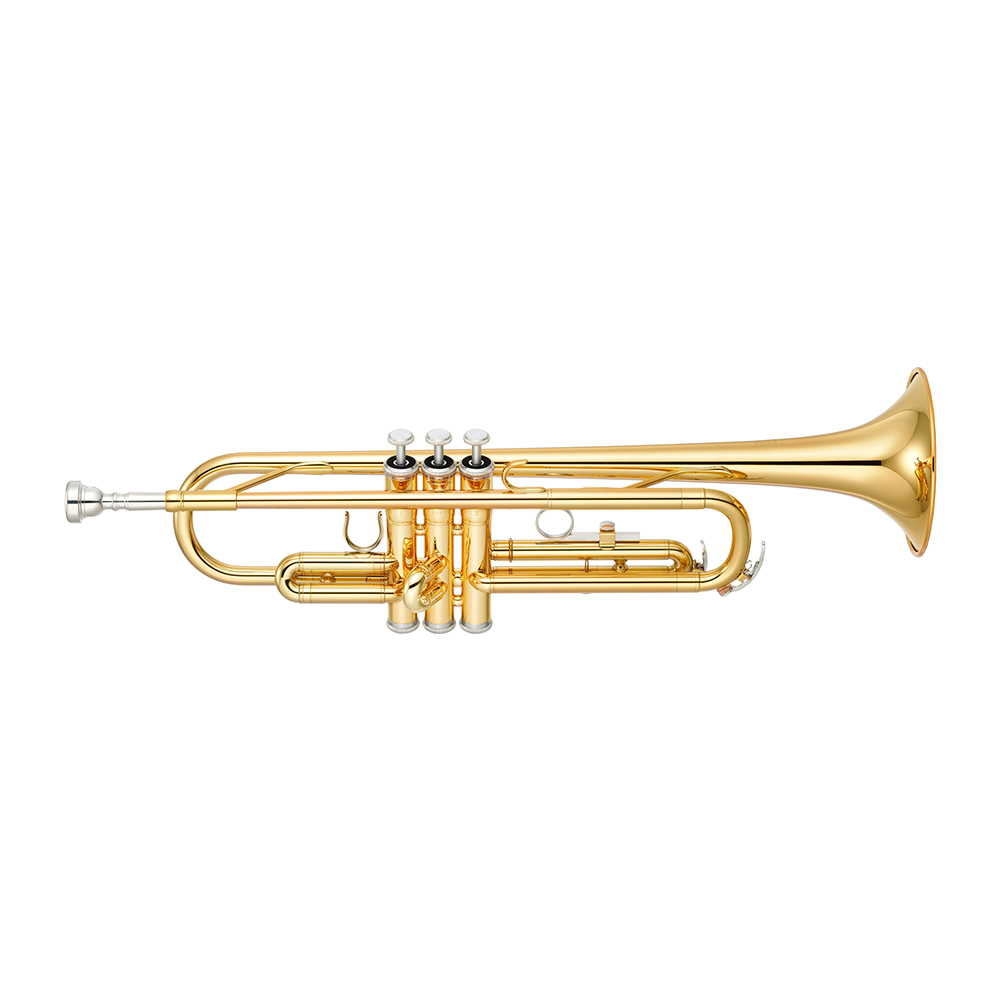
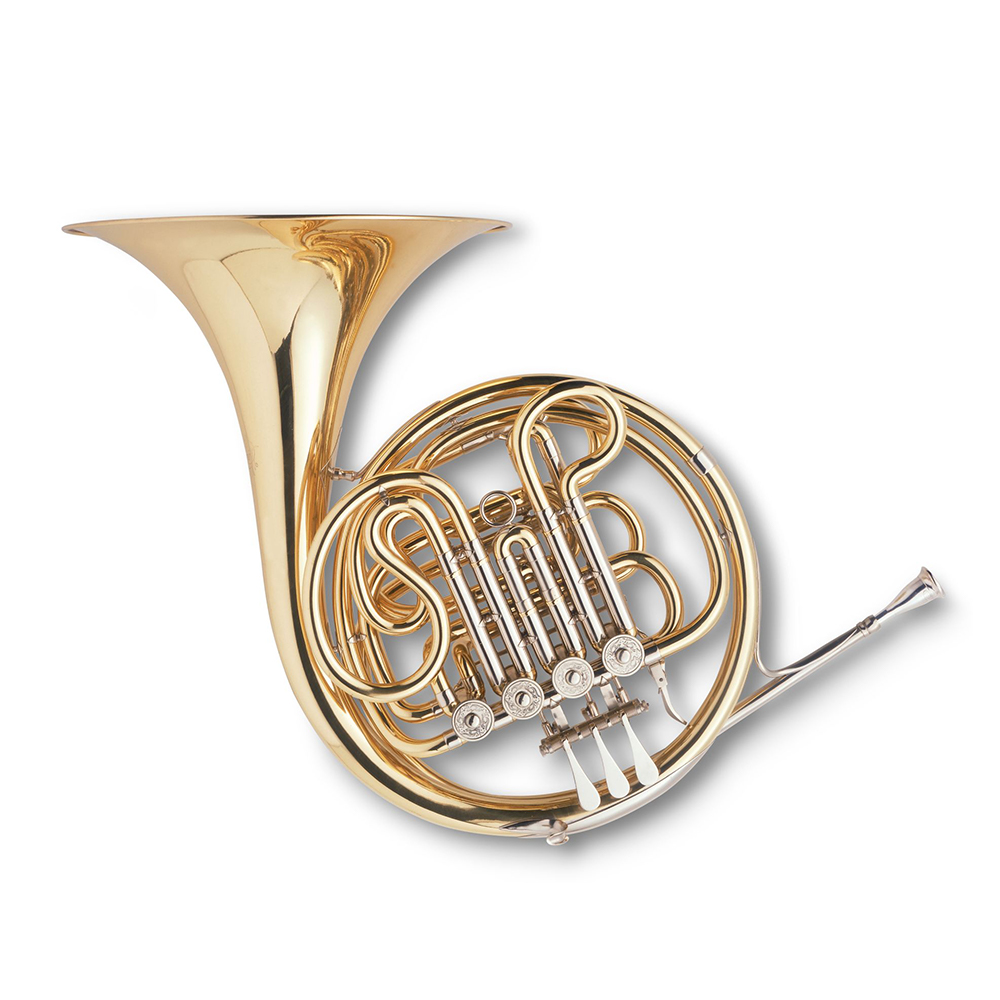
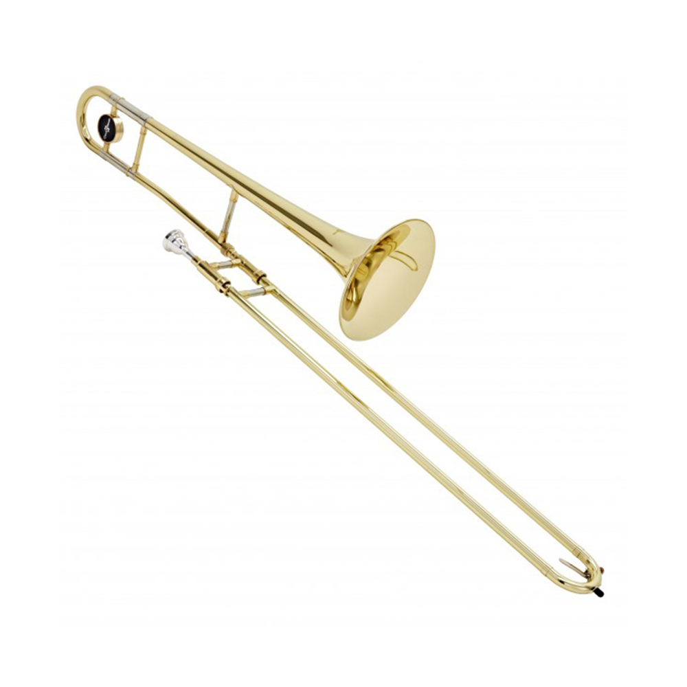
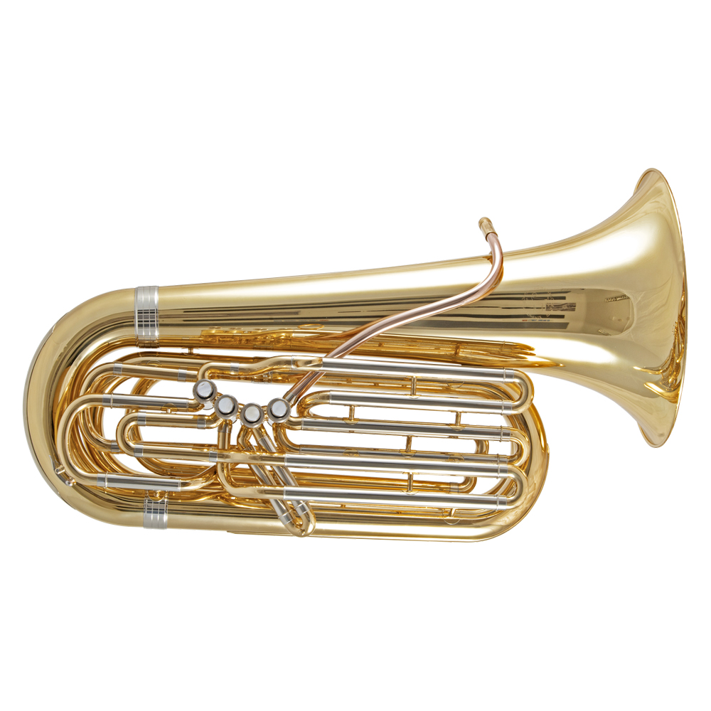

" 화려하고 밝은 음색을 지닌 금관악기 "
트럼펫은 화려하고 밝은 음색을 지닌 금관악기로 금관악기들 중 가장 역사가 깊다. 트럼펫은 전통적으로 환희와 승리, 왕의 권위와 품격을 상징한다. 전쟁 때 신호나팔이나 왕이 등장할 때 울리는 팡파르 악기로 사용되다가 바로크 시대에 이르러 오케스트라에 포함되었고, 바로크 시대 후반에는 독주악기로 각광받았다.
트럼펫은 다른 금관악기들과 마찬가지로 마우스피스에 입을 대고 불어 관내의 공기를 진동시켜 소리 낸다. 슬라이드 부분의 관은 원통형이며 악기 끝 부분인 벨에 이르는 부분의 관은 원추형이다.
고대의 트럼펫은 짧고 곧은 모양으로 나무나 청동, 혹은 은으로 만들어졌으며, 종교적 의식이나 군사적 목적을 위해 사용되었다. 가장 오래된 것은 이집트의 것으로 투탕카멘의 무덤에서 청동과 은으로 만든 두 대의 트럼펫이 발견되었다. 이 외 그리스에서 살핑크스, 로마에서 리투스, 부치나, 코르누 등의 악기가 있었다.
중세 시대에서는 숌-트럼펫 앙상블과 트럼펫-케틀드럼 앙상블이 있었는데 트럼펫-케틀드럼 앙상블은 군대에서 군사의 사기를 높이고 신호를 전달하는 군악대의 역할을 하였다. 순수한 악기 울림만으로 군사들을 격려하고 적들은 두려움에 떨게 하였다. 르네상스 시대에는 군주의 권력을 과시하기 위한 수단이었으며, 트럼펫의 음역대가 확대되고 모양도 점차 표준화 되기 시작하였다.
바로크 시대는 트럼펫의 황금기다. 여러 작곡가들이 트럼펫을 위한 작품을 작곡하기 시작했고, 오케스트라와 독주곡 등에서 자주 사용하였다.
19세기 낭만주의 시대에 밸브 시스템이 발명되면서 트럼펫에도 적용되었다. 현재 금관악기에서는 피스톤 밸브, 로터리 밸브, 비엔나 밸브가 사용되고 있으며, 트럼펫에는 피스톤 밸브와 로터리 밸브가 사용되고 있다. 오늘날의 트럼펫은 밸브 트럼펫을 의미하며 밸브가 부착되기 이전의 트럼펫은 내추럴 트럼펫이라고 한다.
트럼펫의 종류에는 피콜로 트럼펫, 로터리 밸브 트럼펫, 코르넷, 플루겔호른 등이 있다.
참고 자료: "https://terms.naver.com/entry.naver?docId=3574872&cid=60476&categoryId=60476", "https://terms.naver.com/entry.naver?docId=3574870&cid=60476&categoryId=60476", "https://terms.naver.com/entry.naver?docId=3574869&cid=60476&categoryId=60476"

" 풍부하고 깊이가 있는 음색을 가진 악기 "
호른은 트럼펫, 트롬본, 튜바와 함께 오늘날 서양 오케스트라를 구성하는 금관악기이다. 호른은 금관악기 중 가장 먼저 오케스트라에 도입되었으며, 프랑스에서 유럽의 다른 나라들로 전해졌기 때문에 흔히 프렌치 호른(French horn)이라고도 불린다. 다른 금관악기에 비해 음색이 온화하고 부드러워 오케스트라에서 전체 악기의 소리를 모으고 감싸는 역할을 한다. 금관악기 중 중간 음역을 담당하고 있어서 화성을 채워주는 역할을 하며 실내악곡이나 독주곡으로도 다양하게 사용되고 있다. 호른은 관의 길이가 매우 길어 깊은 울림을 지니지만, 깨끗하고 정확하게 연주하기가 상당히 어려운 악기이기도 하다.
원래 신호용 나팔로 사용되던 호른이 음악적인 사운드를 갖게 된 것은 바로크 시대에 이르러서이다. 바로크 시대의 호른은 밸브가 부착되지 않은 내추럴 호른으로오늘날 일반적으로 사용되는 밸브 호른의 전신이라 할 수 있다. 내추럴 호른으로는 한 조성 내의 배음열만이 연주 가능했지만 바로크 시대 후반에 이르러 크룩(crook)이라고 하는 변조관과 핸드-스토핑 주법이 개발되면서 더 많은 음의 연주가 가능해졌다. 그리고 19세기 초에는 호른에 밸브가 장착되면서 호른의 음역 내 모든 음을 고르고 명확하게 낼 수 있게 되었다. 호른을 비롯한 금관악기에 장착되는 밸브에는 로터리 밸브와 피스톤 밸브의 두 종류가 있는데 대부분의 호른에는 로터리 밸브가 사용된다. 호른은 금관악기 중 최초로 밸브가 장착된 악기이며 밸브가 있는 다른 금관악기들과는 달리 왼손으로 밸브를 조작한다.
호른은 아주 오랜 역사를 가진 악기로 동물의 뿔로 만든 신호용 나팔에서 비롯하였다. 동물의 뿔에 구멍을 뚫거나 끝을 자른 다음 입술을 대고 불어 소리를 냈다. 호른은 그 소리가 멀리까지 전달되었기 때문에 신호용 악기로 인기가 있었다. 입술의 떨림을 조절하거나, 뿔의 끝을 부분적으로 막거나, 혹은 뿔의 구멍을 열어서 하나 이상의 소리를 낼 수 있었다. 호른이 지금과 같이 둥글게 감겨 있는 모양을 취하고 음악적인 사운드를 연주할 수 있게 된 것은 17세기 바로크 시대에 이르러서이다. 바로크 호른은 오늘날의 호른과는 달리 밸브가 부착되지 않은 내추럴 호른이다.
19세기 밸브가 발명되어 호른에도 밸브가 적용되었고 다양한 밸브가 발명되었다. 하지만 오늘날 밸브가 나타나기 까지는 상당한 시일이 걸릴만큼 많은 어려움이 있었다.
호른의 종류로는 더블호른, 싱글호른, 비엔나 호른, 트리플 호른, 데스칸트 호른, 바그너 튜바 등이 있다.
참고 자료: "https://terms.naver.com/entry.naver?docId=3574740&cid=60476&categoryId=60476", "https://terms.naver.com/entry.naver?docId=3574741&cid=60476&categoryId=60476", "https://terms.naver.com/entry.naver?docId=3574743&cid=60476&categoryId=60476"

" 폭넓은 다이내믹함, 솔로에서 매력적인 감미로운 톤 "
트롬본의 명칭은 본래 이탈리아어로서 '큰 트롬바'를 의미한다. 트럼펫보다 낮은 음역을 담당하며 발음원리는 트럼펫 등과 같다.
관현악, 취주악의 화성적인 면에서 중요한 역할을 하고 있고 재즈나 포퓰러에서는 아름다운 음으로 독주면에서
활용되고 있다. 구조상 운동성에 제한이 있기 때문에 독주악기로서는 그다지 쓰이지 않았으나 기술의
향상으로 독주악기로도 쓰이게 되었다.
오늘날 트럼본은 슬라이드 트롬본과 밸브 트롬본이 존재하는데, 슬라이드식이 역사도 깊고 오랜 것으로 현재에도 이것이 일반적이다.
슬라이드식은 마우스피스, 슬라이드, 벨의 3부분으로 되어 있다. 마우스피스는 트럼펫의 것을 닮은 조금 대형이며 굽은 캡을 가진 것이 보통이지만,
프랑스계에서는 호른과 같은 형의 것도 쓰고 있다. 슬라이드는 내관과 외관으로 되어 있으며, 모두 똑바른
부분이 주체이나 U자관이라 하는 만곡부를 가지고 있다. 외관을 내관에 U자가 서로 맞보게 끼워 슬라이드시킴으로써 관의 길이를 바꾼다.
트롬본의 어원에 대해서는 앞서 말한 대로 15세기에 이르러 트럼펫의 관이 여러 가지로 굽어지고 그중에 어느 것은 슬라이드 장치를 하고 거기서 낮은음악기가 파생하였고 그 뒤 기본적인 구조는 변화없이 오늘에 이르고 있다. 앙상블에서의 낮은 음악기로서는 16세기 이후 점차로 중요한 것으로 되어 18세기 후반에는 한때 쇠퇴하였으나 베토벤은 5번, 6번, 9번, 10번의 교향곡에 쓰고 있다. 이후 오케스트라에 쓰여 베를리오즈, 바그너 이후의 관현악법에서는 매우 중요한 악기로 되었고, 음빛깔적으로 트럼펫과 색소폰의 중간을 메우는 악기로 재즈 등에서도 애용되고 있다. 입술이나 혀의 기본적인 기술은 금관악기와 같으나 트럼펫이나 호른에 비하면 쓰는 숨의 양은 많아 너무 긴 음형을 한숨에 연주할 수는 없다. 낮은음넓이에서 표현력은 크며, 극도의 피아니시모로부터 포르티시모까지 변화가 된다. 특히 이 악기 특유의 주법으로는 슬라이드식의 장점을 이용한 증4도까지의 음정의 끊임없는 매끄러운 글리산도가 있다.
참고 자료: "https://ko.wikipedia.org/wiki/%ED%8A%B8%EB%A1%AC%EB%B3%B8", "https://terms.naver.com/entry.naver?docId=1153831&cid=40942&categoryId=33037"
" 가장 굵고 긴 관을 가지며 가장 낮은 소리를 지닌다. "

튜바는 오케스트라 전체의 베이스를 담당하는 중추적 역할을 하는 금관악기로, 오늘날 오케스트라에서 사용되는 악기들 중 가장 최근에 도입된 악기 중 하나이다. 튜바라는 명칭은 트럼펫이나 호른을 뜻하는 라틴어이며 주로 오케스트라에서 사용되는 베이스 튜바를 의미한다. 튜바는 관악기들 중에서 가장 크고 최저음역을 소리내지만, 일반적으로 여겨지는 것보다 훨씬 민감하고 민첩하며 다양한 음색을 만들어낼 수 있는 악기이다.
튜바는 밸브가 부착된 넓은 원추형의 보어를 지닌 악기이다. 관은 타원형으로 감겨있고 한쪽 끝에는 위를 향해 있는 넓은 모양의 벨이 있다. 그리고 다른 한쪽 끝에는 마우스피스가 연결되어 있다. 튜바 역시 다른 금관악기와 마찬가지로 큰 컵 모양의 마우스피스에 입술을 대고 진동시켜 소리를 낸다. 튜바는 트럼펫이나 트롬본 등의 금관악기와 다르게 세로로 놓고 연주한다.
튜바는 1835년에 최초로 제작되었고 19세기 후반에 이르러서야 오케스트라 악기로 도입되었다. 그만큼 역사가 짧은데 튜바가 발명되기 이전에는 세르팡, 오피클라이드와 같은 악기들이 관악기의 베이스 파트를 연주하였다. 세르팡은 베이스 목관악기로 튜바의 먼 조상이다. 이 세르팡은 1590년 경 에드메 기욤에 의해 발명되었으며 교회, 특히 그레고리안 성가를 연주할 때 널리 사용되었다. 튜바는 1835년 '빌헬름 비프레히트'와 '요한 고트프리트 모리츠'에 의해 발명되었고 빠른 시일내에 독일에서 오케스트라와 밴드 악기로 받아들여졌다. 하지만 프랑스와 영국에서는 19세기 말까지 오피클라이드가 그 자리를 유지했다. 튜바가 막 작품에 등장하기 시작하였을 때에는 오피클라이드의 대체로 쓰였고 점진적 대체로 쓰이는 연주 관습 때문에 오피클라이드의 한 종류로 여겨진적도 있다.
현재 튜바는 매우 다양한 종류가 있다. 이렇게 다양한 이유는 각각의 연주 상황에 부합하는 보다 전문화 되고 성능이 좋은 악기를 필요로 하기 때문이다. 튜바는 크기도 다양하다. BB♭튜바, CC튜바, 바그너 튜바, E♭조 튜바, F조 튜바, 프렌치 C조 튜바, 유포니엄, 헬리콘, 수자폰 등 엄청 다양하다.
참고 자료: "https://terms.naver.com/entry.naver?docId=3575096&cid=60476&categoryId=60476", "https://terms.naver.com/entry.naver?docId=3575097&cid=60476&categoryId=60476", "https://terms.naver.com/entry.naver?docId=3575099&cid=60476&categoryId=60476"